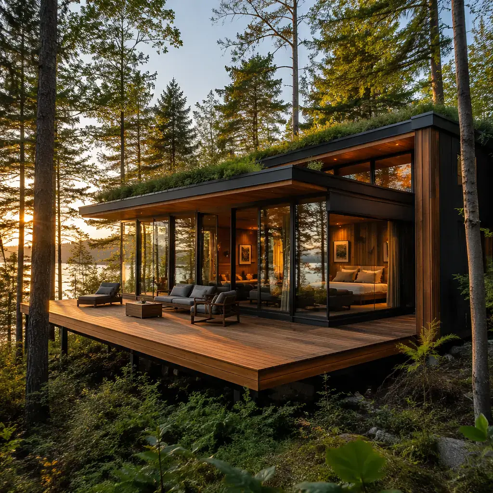
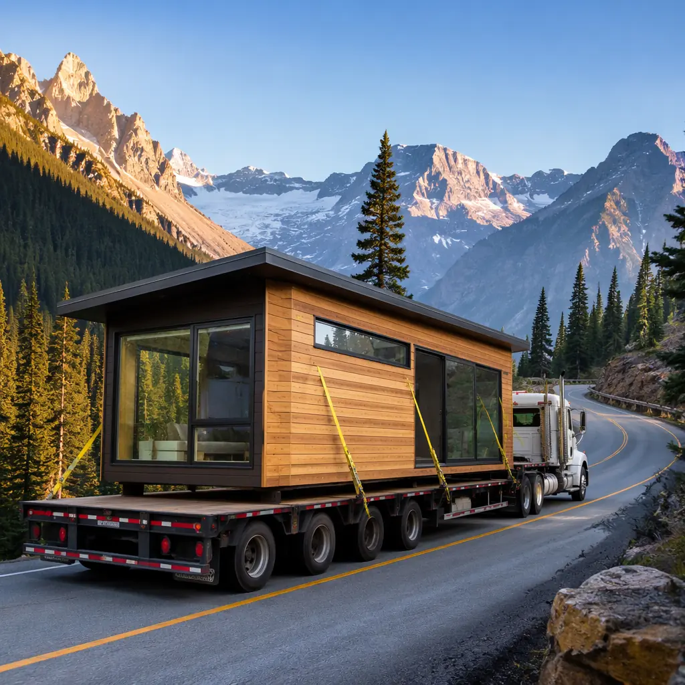
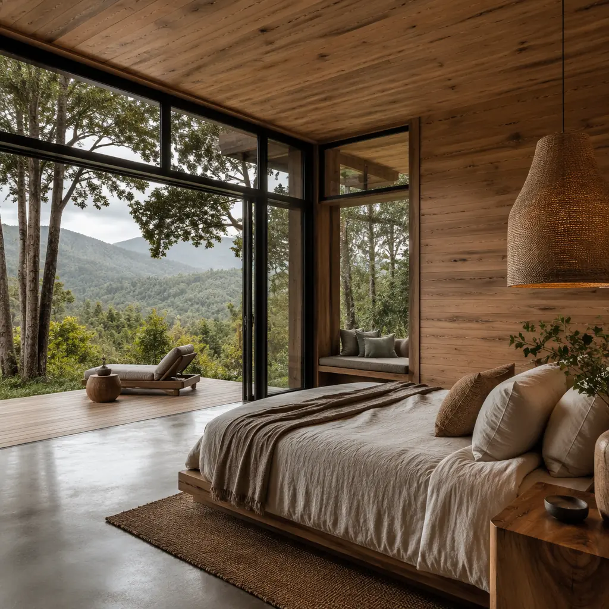
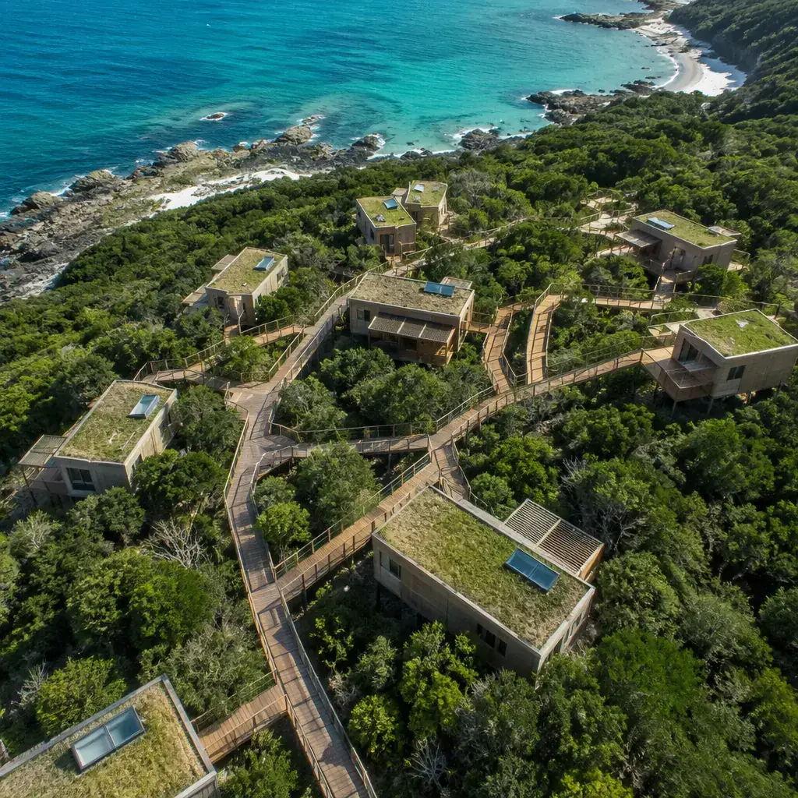
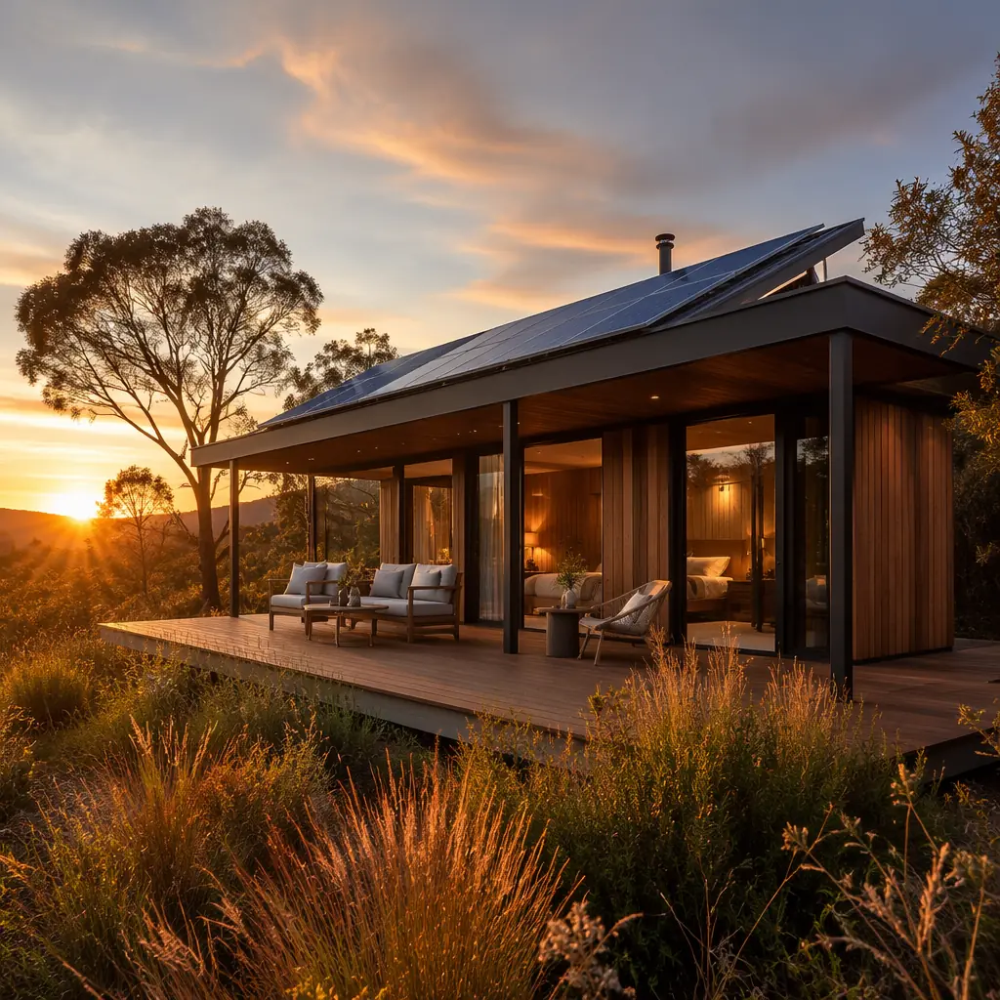

The global eco-tourism market is projected to reach $429 billion by 2028, growing at 14.1% CAGR as travelers increasingly seek nature-based experiences in destinations far from urban infrastructure. National parks, wildlife reserves, coastal preserves, and mountain retreats are seeing unprecedented demand — but these locations share a fundamental construction challenge: they are remote, ecologically sensitive, and lack the skilled labor and material supply chains that conventional hotel construction depends on. A traditional hotel build in a coastal nature reserve might involve 18 months of site disturbance, 40–60 truck deliveries of bulk materials, and a construction workforce of 80–120 people living on or near the site for the duration. Modular prefabricated construction reduces the on-site construction window to 4–8 weeks, cuts material deliveries by 60%, and requires only 10–15 site workers — transforming the viability of remote tourism development.

Why Remote Destinations Break Traditional Construction
Conventional construction assumes infrastructure: paved roads for concrete trucks, a municipal water connection, grid power, and a local labor market with carpenters, electricians, and plumbers within commuting distance. Remote tourism sites have none of these. The economics of traditional construction collapse under these constraints:
- Logistics costs eat 25–40% of the construction budget. Delivering concrete, lumber, drywall, and roofing materials to a site 80 km from the nearest supplier town means every truck round-trip costs $400–800 in fuel, driver time, and vehicle wear. A 20-room lodge requiring 50 truck deliveries adds $20,000–40,000 in logistics cost before a single wall is framed. Modular construction consolidates 50 bulk material deliveries into 8–12 module transports — each one a finished accommodation unit, not raw materials.
- Skilled labor is simply not available. Rural counties near national parks and coastal reserves typically have unemployment rates below 3%, and the available workforce works in tourism and hospitality, not construction. Importing a construction crew means per-diem housing, travel allowances, and productivity losses from workers operating outside their familiar supply chains. A modular approach moves 85% of the labor hours into a controlled factory environment, where skilled crews work year-round regardless of the destination site's weather or labor market.
- Weather windows are narrow and unforgiving. A mountain eco-lodge at 2,500 meters elevation might have a 14-week construction window between snow seasons. A coastal reserve might have a 16-week window between monsoon cycles. Missing the window by even 2 weeks means the project sits exposed for 8–10 months until the next season — during which partially built structures deteriorate, security costs accumulate, and revenue is lost. Modular construction's 4–8 week on-site window fits comfortably within even the narrowest weather windows, and the factory production continues year-round regardless of site conditions.
- Environmental regulations demand minimal disturbance. National park buffer zones, coastal management areas, and wildlife corridors impose strict limits on construction footprint, sediment runoff, noise levels, and vegetation clearance. A traditional construction site with excavators, concrete trucks, and material laydown yards often cannot meet these constraints without expensive mitigation measures. Modular construction eliminates on-site concrete work, reduces heavy equipment presence to a single crane for 3–5 days, and confines all noisy/dusty work to the factory — making environmental permit compliance straightforward rather than adversarial.
These constraints are not unique to tourism — they mirror the challenges we documented in our guide to modular disaster relief housing, where remote deployment and minimal site impact are equally critical. The same factory-to-site logistics model that delivers emergency shelter in 72 hours can deliver a luxury eco-lodge in 14 weeks.

Eco-Certification: Prefab's Hidden Advantage
Sustainability certifications — LEED, BREEAM, Green Globe, EarthCheck — are no longer optional for tourism developments targeting environmentally conscious travelers. A 2024 Booking.com survey found that 76% of travelers say they want to travel more sustainably, and 43% are willing to pay a premium for certified eco-accommodations. But achieving certification through traditional construction means documenting environmental performance across a chaotic construction site with dozens of subcontractors, inconsistent material sourcing, and waste streams that are difficult to track.
Modular construction simplifies certification in three critical ways:
- Material provenance and waste tracking is built into the factory process. In a controlled factory environment, every sheet of FSC-certified plywood, every length of recycled steel, and every low-VOC finish is tracked from receiving to installation. Construction waste — which averages 15–20% of materials on a traditional site — drops to 3–5% in a modular factory because standardized module dimensions allow optimized material cutting, and offcuts from one module become components for the next. This directly supports LEED's Construction Waste Management credit (MRc5) and BREEAM's Wst 01 requirement.
- Embodied carbon is measurable and reducible. A traditional lodge built on a remote site burns diesel in concrete mixers, generator-powered tools, worker transport vehicles, and material delivery trucks — all Scope 3 emissions that are estimated, not measured. A modular factory has permanent utility connections, enabling precise energy metering per module. MODURA factories operate on 40% renewable energy and track carbon intensity per module to within ±5% accuracy — data that directly feeds into embodied carbon assessments. For a deeper analysis of carbon accounting in modular construction, see our guide to modular construction embodied carbon.
- On-site ecosystem impact is quantifiably lower. A traditional construction site for a 20-unit eco-lodge typically disturbs 4,000–6,000 m² of land for 18 months, including access roads, material storage, worker facilities, and the building footprint itself. A modular installation for the same 20 units disturbs 1,200–1,800 m² for 6–8 weeks — roughly 70% less area and 90% less duration. This reduction is directly relevant to Green Globe's Site Planning and Ecosystem Conservation standard (C.1.1–C.1.4) and EarthCheck's Planning and Design criterion.
The certification advantage extends beyond documentation. Because modular units are factory-tested for air tightness, thermal performance, and moisture management before leaving the factory, the as-built performance matches the design specification far more closely than site-built construction. This is the same principle we explored in modular building energy efficiency — factory precision eliminates the 15–25% performance gap between designed and as-built energy consumption that plagues traditional construction.
Design Language: Architecture That Belongs in Nature
A common objection to modular tourism accommodations is that they will look like shipping containers dropped in a forest — functional but visually alien. This misconception conflates modular construction with container architecture. MODURA eco-lodge modules are purpose-designed for their destination context, with exterior finishes, rooflines, and fenestration that integrate with the natural environment:

- Exterior materials match the local vernacular. Modules can be finished with local stone veneer, charred timber (shou sugi ban), corten steel, or fiber cement paneling in earth tones. The module's structural steel frame accepts virtually any cladding system, allowing architects to specify materials that make the building feel indigenous to its setting. A coastal eco-lodge might use weathered cedar and corrugated metal; a mountain retreat might use rough-sawn timber and stone.
- Rooflines can pitch, slope, or green. Modular construction does not mean flat roofs. Modules support pitched roofs (up to 12:12 slope), butterfly roofs for rainwater collection, or living green roofs with native vegetation. The roof structure is factory-framed and sheathed, with final roofing material applied on site to protect it during transport.
- Glazing maximizes the view — the whole point of the location. Floor-to-ceiling double or triple glazing on the view-facing elevation, with low-E coatings tuned to the local climate (solar heat gain coefficient below 0.25 for tropical sites, above 0.50 for cold climates). Operable windows provide natural cross-ventilation, reducing or eliminating mechanical cooling in temperate destinations.
- Indoor-outdoor flow is engineered into the module. Sliding glass walls that pocket completely, covered decks or terraces integrated into the module width, and level thresholds that eliminate the step between interior and exterior — these are standard configuration options, not costly custom modifications. For resorts and extended-stay properties requiring more generous layouts, see our coverage of modular resort construction.
Unit Types for the Tourism Spectrum
Tourism accommodations span a wide range of service levels and spatial requirements. MODURA's tourism module catalog covers the full spectrum:
| Unit Type | Size | Configuration | Target Market |
|---|---|---|---|
| Glamping Pod | 18–25 m² | Sleeping + en-suite bathroom + deck | National parks, adventure tourism |
| Eco-Cabin | 30–45 m² | 1BR + living + kitchenette + deck | Eco-resorts, wellness retreats |
| Safari Suite | 45–65 m² | 2 modules joined, 1BR suite + lounge | Luxury safari, private reserves |
| Visitor Center Module | 60–120 m² | Multi-module, open plan + retail + cafe | National park facilities, nature reserves |
| Staff Housing | 25–35 m² | Studio/1BR, shared common areas | Remote resort workforce |
All unit types share a common structural module width (3.6 m or 4.2 m depending on transport regulations in the destination country), which standardizes factory tooling, transport logistics, and site foundation design. Units can be deployed individually for boutique eco-lodges or in clusters of 20–40 for larger resorts — the module standard remains the same, only the quantity scales. This is consistent with the modular principles we documented in our modular hotel cost analysis.

Off-Grid Capability: Tourism Beyond the Power Line
Many of the world's most compelling tourism destinations — remote islands, mountain valleys, desert oases — have no grid connection. Traditional construction in these locations requires either extending the grid at $50,000–150,000 per kilometer, or installing a diesel generator with ongoing fuel logistics that undermine the eco-tourism proposition. Modular construction enables genuine off-grid operation through factory-integrated renewable energy and water systems:
- Integrated solar + battery storage: Roof-mounted photovoltaic panels (4–8 kWp per module) combined with lithium-iron-phosphate battery storage (10–20 kWh per module) provide 80–95% of annual energy needs in sunbelt destinations. The system is pre-wired and tested in the factory — the only site work is connecting the module's main breaker to the solar array home-run cables. For larger clusters, modules can share a central battery and inverter system while maintaining individual module metering.
- Rainwater harvesting + greywater recycling: Butterfly or single-slope roofs channel rainwater into integrated storage tanks (2,000–5,000 liters per module), with first-flush diversion and UV filtration providing potable-quality water. Greywater from showers and sinks is treated through a compact membrane bioreactor housed in a dedicated services module, producing irrigation-quality water for landscaping. The entire water system is pre-plumbed and pressure-tested in factory.
- Composting or incinerating toilets: For sites without septic field capacity, modules can be configured with electric incinerating toilets (0.5 kWh per cycle, ash output of 1–2 tablespoons) or continuous composting systems that require emptying every 6–12 months. Both options eliminate the need for sewer infrastructure and the associated environmental permits for septic field installation in sensitive watersheds.
The off-grid capability is not a compromise — properly designed, an off-grid modular eco-lodge can achieve a smaller environmental footprint than a grid-connected traditional building, because it avoids the embodied carbon of power line construction and the methane emissions of septic systems. For developers considering sustainability certifications, see our analysis of LEED certification for modular projects.
From Permit to Guest Arrival: A Real Timeline
Let's trace a realistic project: a 15-unit eco-lodge in a national park buffer zone, with each unit at 35 m² (Eco-Cabin configuration), plus a 80 m² visitor center and reception module. The site is 2 hours from the nearest town on an unpaved access road.
Traditional construction estimate: 6 months permitting + 14 months construction + 3 months commissioning and FF&E = 23 months. Construction would require clearing 3,500 m² for staging, a concrete batch plant (or 80+ truck deliveries), and a crew camp for 40+ workers. Environmental impact assessment alone would take 4–6 months and likely require mitigation measures adding $80,000–120,000 to the project cost.
Modular approach: 3 months permitting (simplified because factory production is off-site) + 14 weeks factory production (concurrent with site preparation: foundation pads, utility trenches, access road improvements) + 6 weeks site installation and commissioning = approximately 8 months from permit to guest arrival. Site disturbance limited to 1,200 m². Construction crew on site: 12 people for 6 weeks, housed in two of the staff modules that become permanent workforce housing.
The 15-month schedule advantage isn't just a convenience — it's the difference between capturing two peak tourist seasons versus one, which for a 15-unit lodge at $350/night and 65% occupancy represents approximately $750,000 in additional revenue. The modular premium (typically 5–8% above traditional construction cost) is recovered within the first season of operation. As we demonstrated in our developer's ROI guide, speed-to-revenue is the single largest financial lever in hospitality construction.

Developing a tourism or eco-lodge project? MODURA's hospitality team can help evaluate site feasibility, unit configurations, and off-grid system design for your specific destination. Contact us to start the conversation.